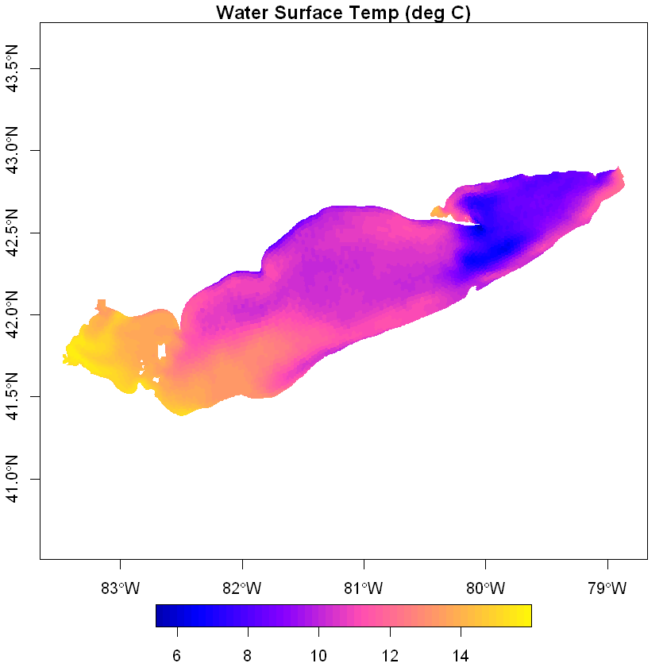

Access GLCFS model output from THREDDS Server with R#
This notebook is help users get started using FVCOM output from the GLERL THREDDS Server. This example includes data from the Great Lakes Coastal Forecasting System (GLCFS). Learn more about GLCFS here and how to access both experimental and operational data on the Data Access page here.
For plotting in R, this script uses kml files that represent the FVCOM grid nodes and elements. Users can download the kml files from the link here.
Load required libraries#
# install.packages(ncdf4)
# conda install -c conda-forge r-ncdf4
library(ncdf4)
# install.packages(sf)
# conda install -c conda-forge r-sf
library(sf)
# install.packages(codetools)
# conda install -c conda-forge r-codetools
library(codetools)
# install.packages(raster)
# conda install -c conda-forge r-raster
library(raster)
# install.packages(sf)
# conda install -c conda-forge r-fields
library(fields)
Linking to GEOS 3.9.1, GDAL 3.2.1, PROJ 7.2.1; sf_use_s2() is TRUE
Loading required package: sp
Loading required package: spam
Spam version 2.9-1 (2022-08-07) is loaded.
Type 'help( Spam)' or 'demo( spam)' for a short introduction
and overview of this package.
Help for individual functions is also obtained by adding the
suffix '.spam' to the function name, e.g. 'help( chol.spam)'.
Attaching package: 'spam'
The following objects are masked from 'package:base':
backsolve, forwardsolve
Loading required package: viridis
Loading required package: viridisLite
Try help(fields) to get started.
Settings#
lk <- 'erie' # which lake? superior | michigan-huron | hec | erie | ontario
typ <- 'nowcast' # type of output? nowcast | forecast
ystrday <- format(as.Date(date(), format='%c')-1, format='%m%d%H')
mmddhh <- ystrday # date (month day hour).... init time for forecasts; *last* hour for nowcasts
#mmddhh <- '051500' # or set manually to some specific day
Build URL to read netCDF data#
base_url <- 'https://www.glerl.noaa.gov/thredds/dodsC/glcfs/'
filename <- sprintf('%s_0001.nc', mmddhh)
url <- paste(base_url, lk, typ, filename, sep='/')
print(ystrday)
[1] "052200"
Loading the FVCOM file#
ncid <- nc_open(url) # make sure to CLOSE netCDF stream later! (otherwise errors will occur)
print(names(ncid$var)) # print all var names
print(ncatt_get(ncid, 'temp')) # print temperature metadata
[1] "nprocs" "partition" "x"
[4] "y" "lon" "lat"
[7] "xc" "yc" "lonc"
[10] "latc" "siglay_center" "siglev_center"
[13] "h_center" "h" "nv"
[16] "iint" "Itime" "Itime2"
[19] "Times" "zeta" "nbe"
[22] "ntsn" "nbsn" "ntve"
[25] "nbve" "a1u" "a2u"
[28] "aw0" "awx" "awy"
[31] "art2" "art1" "u"
[34] "v" "tauc" "omega"
[37] "ww" "ua" "va"
[40] "temp" "salinity" "viscofm"
[43] "viscofh" "km" "kh"
[46] "kq" "q2" "q2l"
[49] "l" "short_wave" "net_heat_flux"
[52] "sensible_heat_flux" "latent_heat_flux" "long_wave"
[55] "uwind_speed" "vwind_speed" "wet_nodes"
[58] "wet_cells" "wet_nodes_prev_int" "wet_cells_prev_int"
[61] "wet_cells_prev_ext" "aice" "vice"
[64] "tsfc" "uuice" "vvice"
$long_name
[1] "temperature"
$standard_name
[1] "sea_water_temperature"
$units
[1] "degrees_C"
$grid
[1] "fvcom_grid"
$coordinates
[1] "time siglay lat lon"
$type
[1] "data"
$mesh
[1] "fvcom_mesh"
$location
[1] "node"
Define a function to parse FVCOM dates & times#
# hint: add this function to your ~/.Rprofile
fvcom_dts <- function(ncid, origin='1970-01-01'){
days <- ncvar_get(ncid, "Itime") # days since unix epoch
msec <- ncvar_get(ncid, "Itime2") # millisecs since day began
# now convert to seconds and parse as POSIXct
dts <- as.POSIXct(days*3600*24 + msec*1e-3, origin = origin, tz = "UTC")
return(dts)
}
# now use the function
dts <- fvcom_dts(ncid)
print(dts)
[1] "2023-05-21 13:00:00 UTC" "2023-05-21 14:00:00 UTC"
[3] "2023-05-21 15:00:00 UTC" "2023-05-21 16:00:00 UTC"
[5] "2023-05-21 17:00:00 UTC" "2023-05-21 18:00:00 UTC"
[7] "2023-05-21 19:00:00 UTC" "2023-05-21 20:00:00 UTC"
[9] "2023-05-21 21:00:00 UTC" "2023-05-21 22:00:00 UTC"
[11] "2023-05-21 23:00:00 UTC" "2023-05-22 00:00:00 UTC"
Visualize FVCOM surface temperatures#
Read in Thiessen Polygons corresponding to nodes and plot the surface temperature data. The voroni.kml file can be downloaded by clicking here.
polys <- st_read('https://www.glerl.noaa.gov/emf/kml/eri/voronoi.kml')
Reading layer `voronoi' from data source
`https://www.glerl.noaa.gov/emf/kml/eri/voronoi.kml' using driver `KML'
Simple feature collection with 6106 features and 2 fields
Geometry type: MULTIPOLYGON
Dimension: XY
Bounding box: xmin: -83.47519 ymin: 41.38285 xmax: -78.854 ymax: 42.90551
Geodetic CRS: WGS 84
# read surface tmps and assign as attribute to SpatialPolygons
temp_sfc <- ncvar_get(ncid, 'temp')[,1,1]
polys$T <- temp_sfc
#draw plot
# png('sfc_T.png', width=1000, height=800)
plot(polys[,'T'], border=NA, axes=T, nbreaks=50, main='Water Surface Temp (deg C)')
dev.off()
null device: 1

Read & plot current normalized current field#
To download the elems.kml file click here.
x <- ncvar_get(ncid,'lonc')-360
y <- ncvar_get(ncid,'latc')
lay <- 1 # surface
t0 <- 1 # first time step
u <- ncvar_get(ncid, 'u')[,lay,t0]
v <- ncvar_get(ncid, 'v')[,lay,t0]
speed <- sqrt(u^2+v^2)*1e3
elems <- st_read('https://www.glerl.noaa.gov/emf/kml/eri/elems.kml') # read in elements to get bounding box
png('currents.png', width=1200, height=800)
plot(extent(elems), col=NA, ax=T, xlab=NA, ylab=NA) # draw the canvas
arrows(x0=x, y0=y, x1=x+u/speed, y1=y+v/speed, length=.05, angle=25)
dev.off()
Reading layer `elements' from data source
`https://www.glerl.noaa.gov/emf/kml/eri/elems.kml' using driver `KML'
Simple feature collection with 11509 features and 2 fields
Geometry type: POLYGON
Dimension: XY
Bounding box: xmin: -83.47519 ymin: 41.38285 xmax: -78.854 ymax: 42.90551
Geodetic CRS: WGS 84
png: 2
Extract a temperature profile near a given coordinate point#
# define coords of interest
mylat <- 42 # degrees north
mylon <- -82 # longitude (negative degrees) West
mypts <- cbind(mylon, mylat)
# read in FVCOM coords and find nearest node
lat <- ncvar_get(ncid, 'lat')
lon <- ncvar_get(ncid, 'lon') - 360
pts <- cbind(lon, lat)
idx <- which.min(rdist.earth(mypts, pts))
print(cbind(lat[idx], lon[idx])) # print nearest coords for confirmation
[,1] [,2]
[1,] 41.99561 -82.01352
# read temperature profile at specific point
Tz <- ncvar_get(ncid, 'temp')[idx,,] # dimensions [ Z x time ]
h <- ncvar_get(ncid, 'h')[idx]
sig <- ncvar_get(ncid,'siglay')[idx,]
deps <- c(h) * as.vector(sig) # generate depths vector based on sigma levs
png('temp_vs_depth.png', width=1200, height=700, pointsize=20)
ti_str <- sprintf('water temp (deg C) at %4.1fN, %4.1fW', mylat, -mylon)
image.plot(x=dts, y=-deps, z=t(Tz), ylim=rev(range(-deps)), ylab='depth (meters)', xlab=NA, main=ti_str, xaxt='n')
axis.POSIXct(side=1, dts, format='%H:%MZ') # label hour:minute on x-axis
axis.POSIXct(side=1, dts, format='%b-%d', line=1, lwd=0) # label month day below
dev.off()
png: 2
nc_close(ncid)
# if netcdf stream isn't closed, errors will occur next time file is accessed